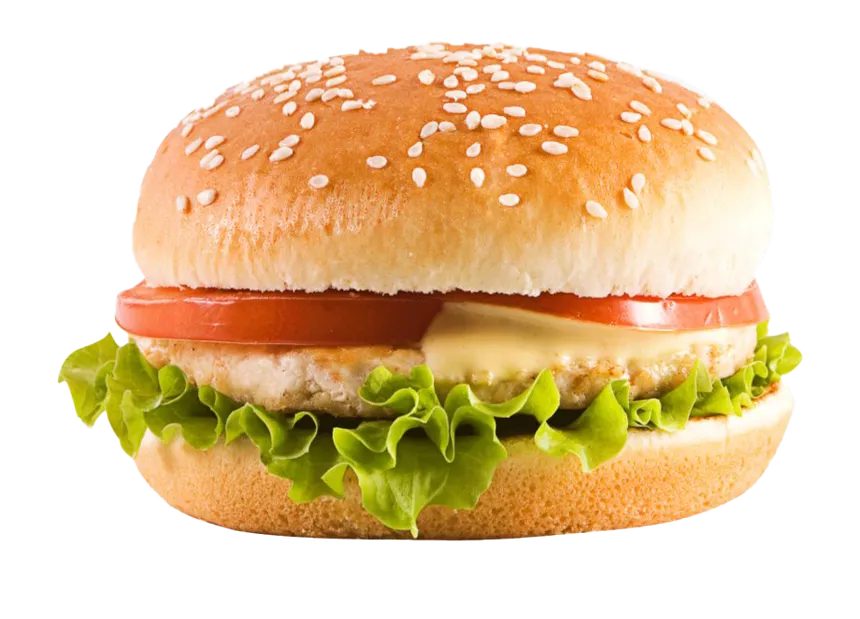

HAMBURGER

Description
Hamburger is very delicious and simple, The burger has tomato, lettuce,
cheese, bread, and everything you want that you want to have
Ingredients
- Ground beef (or any other ground meat of your choice)
- Burger buns
- Lettuce
- Tomato
- Onion
- Cheese (such as cheddar or American)
- Ketchup
- Mustard
- Salt and pepper
- Cooking oil or butter (for cooking the burgers)
Steps
- Prepare your ingredients and ensure you have everything you need: ground beef, burger buns,
lettuce, tomato, onion, cheese, ketchup,mustard, salt, pepper, and cooking oil or butter.
- Shape the ground beef into burger patties. Divide the meat into portions of your desired size and
shape each portion into a round, flat patty. Ensure they have uniform thickness for even cooking.
- Heat a skillet or grill over medium-high heat and add a little cooking oil or butter.
- Season the burger patties with salt and pepper to taste on both sides.
- Cook the burgers in the hot skillet or grill. Cook each side for about 3-4 minutes,
depending on the thickness of the burger and your desired level of doneness (medium, well-done, etc.).
Flip the burgers only once.
- While the burgers are cooking, prepare additional ingredients: slice the tomato thinly, slice the onion
thinly, and separate the lettuce leaves.
- When the burgers are almost done, place a slice of cheese on top of each patty and let it melt slightly.
- Lightly toast the burger buns in the skillet or a toaster.
- Assemble the burger: place a lettuce leaf on the bottom half of the bun, followed by the burger patty
with melted cheese, then add tomato and onion slices. Add ketchup and mustard to taste on the
top half of the bun, then cover the burger with the other half of the bun.
- Serve hot and enjoy your delicious homemade burger!